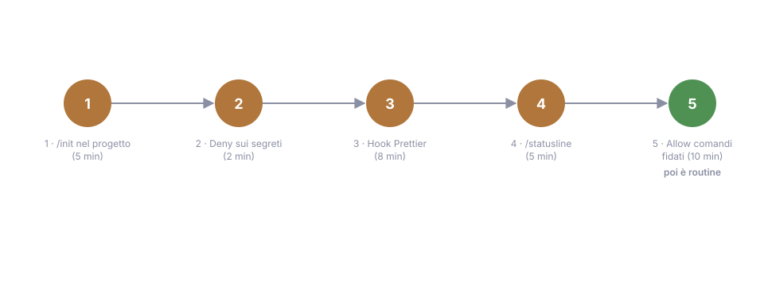

14 - Must-Haves and Costs: The First 30 Minutes of Setup¶
Verified July 15, 2026. Prices change: check claude.com/pricing.
The minimal setup that pays off right away¶
The problem this chapter solves: the guide has 17 chapters and you won't apply them all on day one. Which five things should you do right now, in the right order, so they pay off by the first afternoon? Here they are:
/initin your project → a starting CLAUDE.md, then prune it (ch. 04). Commit it: it's documentation for the team, not just for you. Without a CLAUDE.md every session starts from zero and you re-explain the same conventions every day.- Deny rules for secrets in
.claude/settings.json:Read(.env),Read(.env.*),Bash(cat *.env*)(ch. 02). Two minutes, once and for all: the day Claude, exploring for a bug, is about to open the file with the API keys, the deny stops it without you having to be there. - A Prettier hook on PostToolUse (ch. 07). Every touched file comes out already formatted: no whitespace-only diff noise, no "reformat everything" at the end of the session. A frontend dev without this hook is leaving money on the table.
/statusline: put context usage and model in it, the two things you want to see at all times. A filling context explains half the weird behavior (ch. 13), and watching it climb in real time makes you run/clearat the right moment instead of three tasks too late.- Allow rules for trusted commands:
npm run test,npm run lint,git status/diff/logon the allow-list, so you stop approving the obvious. Every confirmation prompt on a harmless command is friction that keeps you supervising instead of working.

And when the time comes, the sixth move adds itself: the Chrome extension or Playwright MCP (ch. 10).
And then, the most important rule of all: let the rest grow just-in-time. A skill the second time you re-explain a procedure, an agent the first time a search pollutes your context, a hook the first time Claude "forgets" a rule. Building the arsenal in advance is the surest way to build the wrong one: real need is a better design criterion than any prediction.
The right model for the right task¶
The pain to avoid cuts both ways: paying for the big model to rename a variable, or letting the small model wrestle with a subtle bug for an hour. The map:
- The default (Sonnet) is fine for almost all day-to-day work.
/model opusplanis the most-cited trick: the big model (Opus) plans, the mid-size one executes: you pay for reasoning where it pays off (the decisions) and save where it doesn't (the typing grunt work).- The small model (Haiku) for mechanical work, especially in agents
(
model: haikuin the frontmatter, ch. 06): an agent that formats or greps for strings doesn't need to reason. Alt+T(extended thinking) for the genuinely hard problems, not by default: it's extra power at extra cost, and on the average task you won't notice it.
An honest note: the official docs sometimes push in the opposite direction ("use the big model with thinking: fewer corrections = faster overall"). Both positions are true in different cases: well-specified task → mid-size model; ambiguous task that's expensive to correct → big model. The dividing line is how likely the first attempt is to go wrong: if it's likely, the big model that nails it right away costs less than three rounds with the mid-size one.
The signal: if you notice you keep correcting the mid-size model on a certain kind of task, that kind of task deserves the big one. If the big one never does anything smart, you're paying for reasoning you don't use.
The 5 money-saving habits (official)¶
/clearbetween tasks- a model sized to the task
- reference files by path (
@src/…) instead of pasting them - CLAUDE.md under ~200 lines
- plan before large changes (fewer attempts = fewer tokens)
You'll notice these are the same rules as chapters 3, 4 and 13: what makes Claude work better is what costs less. That's no coincidence: the common enemy is wasted context. The token you pay for and the token that confuses the model are the same token: optimizing for quality and optimizing for cost, here, are the same move.
Monitoring¶
Four tools, from most to least frequent:
- the statusline: everything below, always in view, without asking
/context: how much context you're using (check it when answers get worse, that's usually where the explanation is)/usage: where you stand against your plan limits (Pro/Max)/cost: session spend (API users)
Orders of magnitude: the full table of plans is in ch. 01.
The limit bites quickly
If Claude Code becomes your main tool, the Pro limit (~200 messages every 5 hours) bites quickly: it sounds like a lot until you spend a whole day in session.
Going further (a glimpse)¶
Three directions for when the basic flow starts feeling tight:
claude -p "prompt": headless mode, Claude Code in scripts and in CI (--output-format jsonfor structured output). The moment you need it: when something you do in a session should run on its own.- GitHub Actions:
anthropics/claude-code-action,@claudein PR comments for automated reviews and fixes; it respects the repo's CLAUDE.md, so the conventions you wrote apply there too. - Git worktrees: multiple parallel sessions on different branches
(
claude --worktree); the bottleneck becomes your review capacity, not Claude. Try it only once your single-session flow is already solid: parallelizing chaos just gives you parallel chaos.
In short: five moves on day one (init, deny, format hook, statusline, allow-list), the rest when you actually need it. And the habit that beats them all: clean context, evidence always. If after these habits your budget still pinches, ch. 15 covers the tools that compress tokens at the source, with measured numbers, not promised ones.